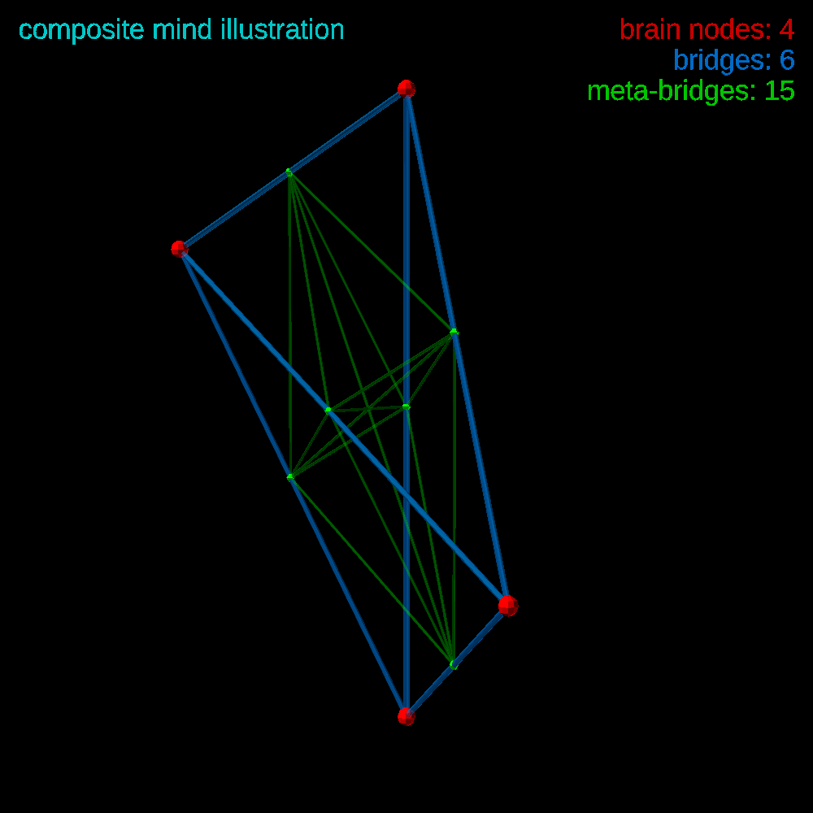
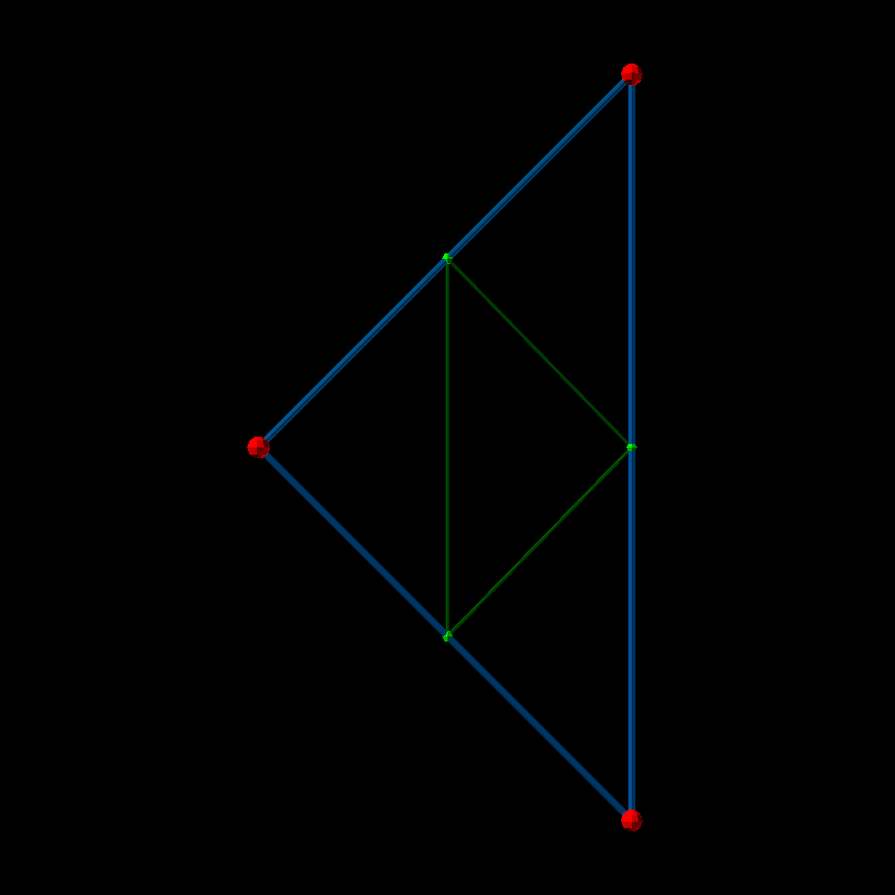
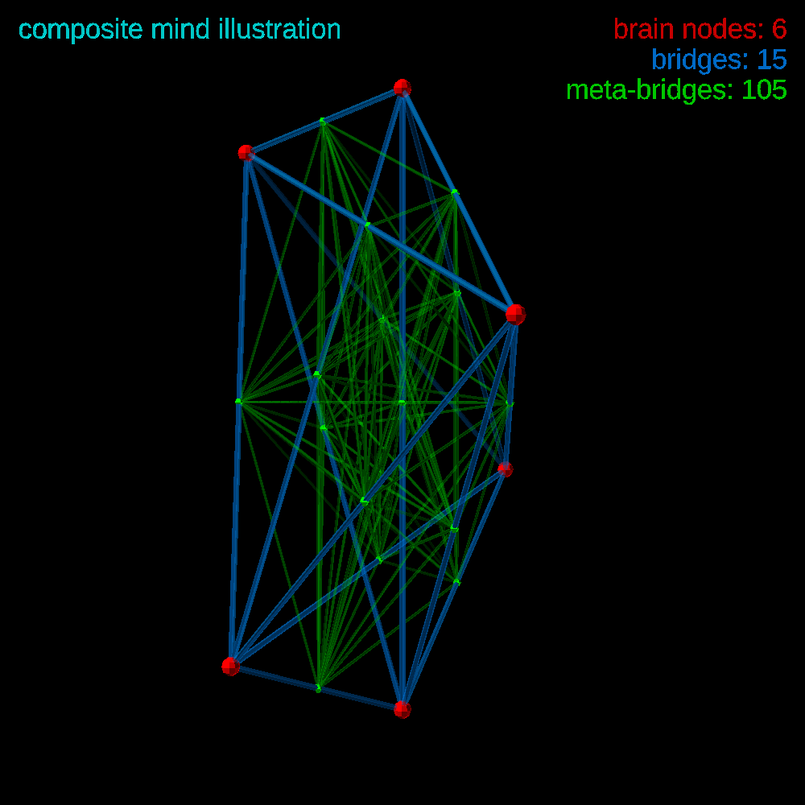
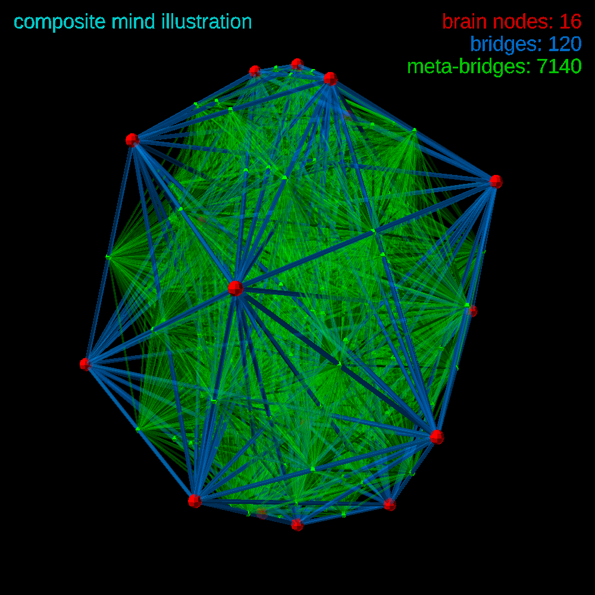
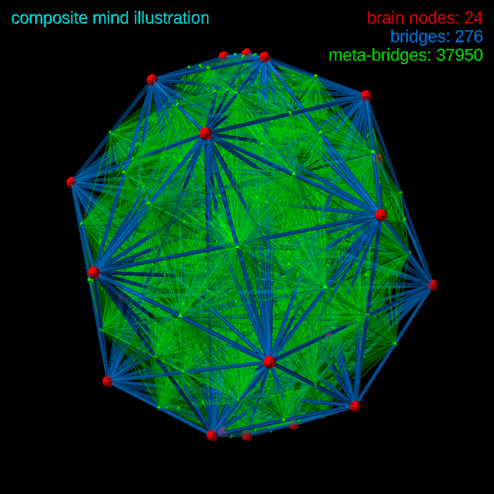

ITON
ITON



| brain nodes | bridges | meta-bridges |
|---|---|---|
| n | n×(n-1)/2 = 0.5n2-0.5n | (n×(n-1)/2)×((n×(n-1)/2)-1)/2 = 0.125n4-0.25n3-0.125n2+0.25n |
| 1 | 0 | 0 |
| 2 | 1 | 0 |
| 3 | 3 | 3 |
| 4 | 6 | 15 |
| 5 | 10 | 45 |
| 6 | 15 | 105 |
| 8 | 28 | 378 |
| 16 | 120 | 7140 |
| 32 | 496 | 122 760 |
| 64 | 2016 | 2 031 120 |
| - | - |




